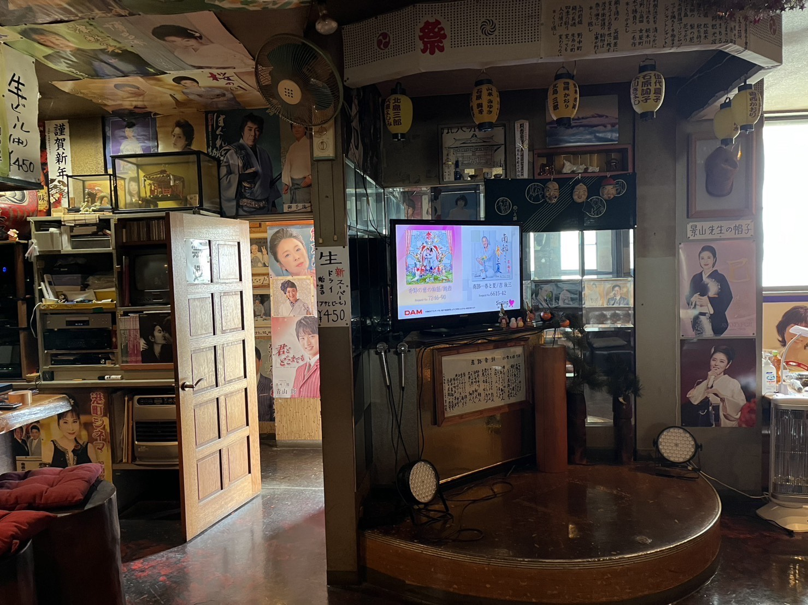
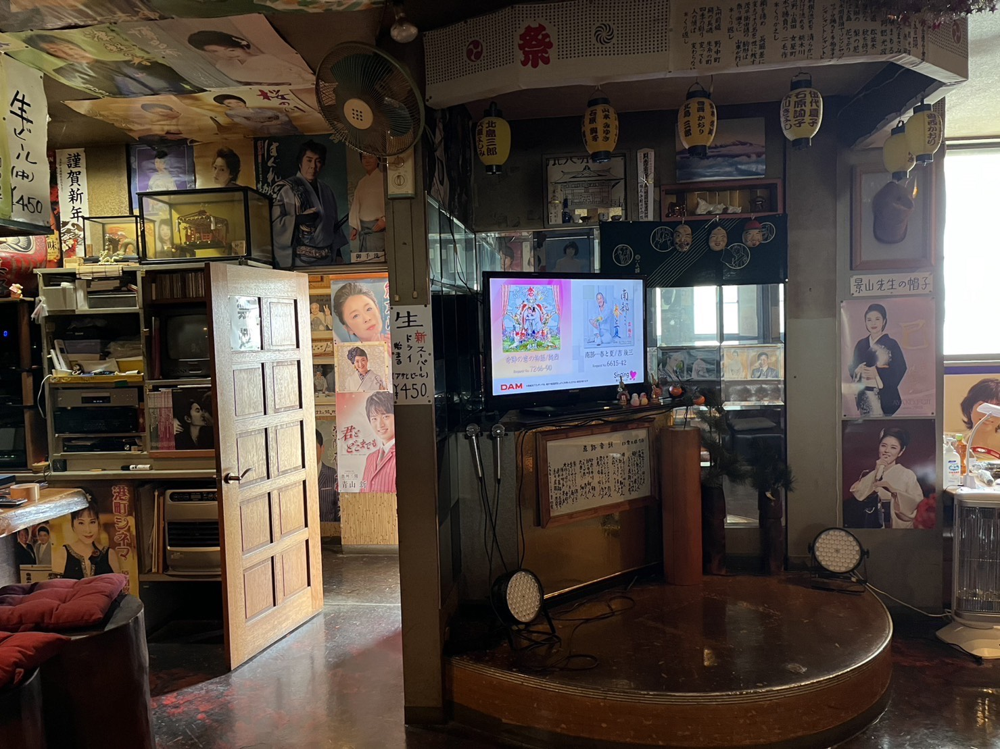

Address: 139-4 Nonakamachi, Maebashi, Gunma 379-2166
Contact: shinaji5963@gmail.com / +81.080.5513.1029
Hours: Friday & Saturday, 2:00 PM – 10:00 PM
*Please call or text before visiting so we can accommodate you.
About
Founded in 1990 by a local grandpa, Shinaji is a family-run bar now operated by his son and grandson. It’s a cozy spot to relax, sing, and enjoy time with friends or family. Foreigner-friendly, English-speaking staff available.


 
